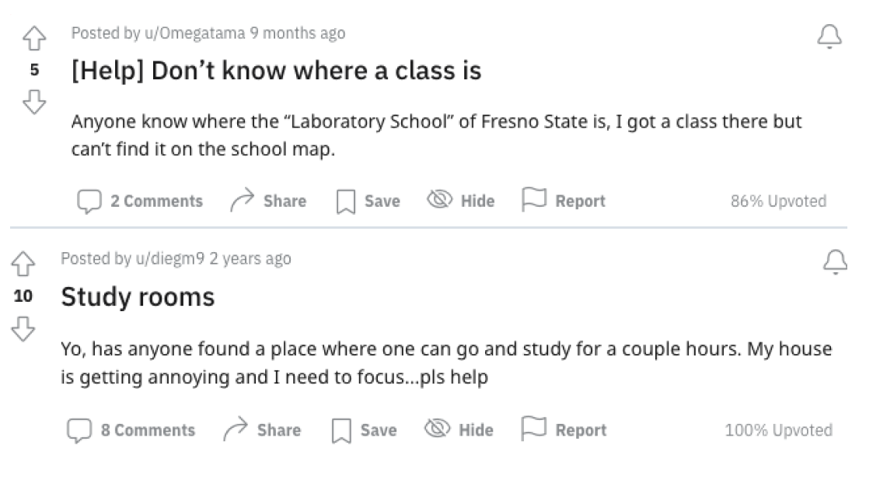
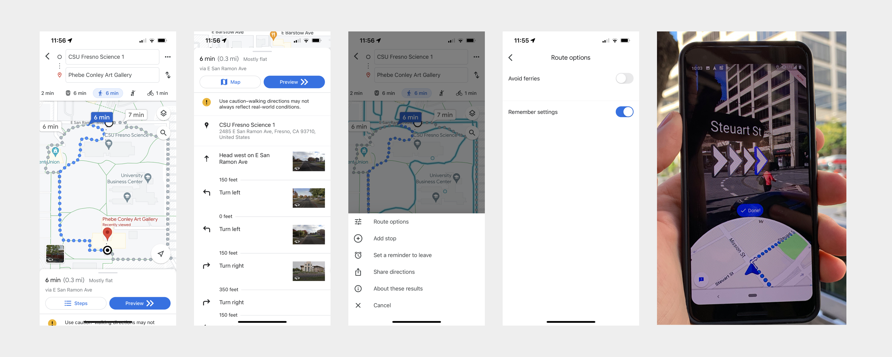
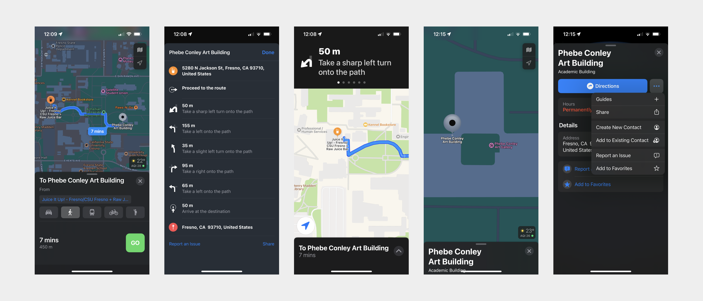
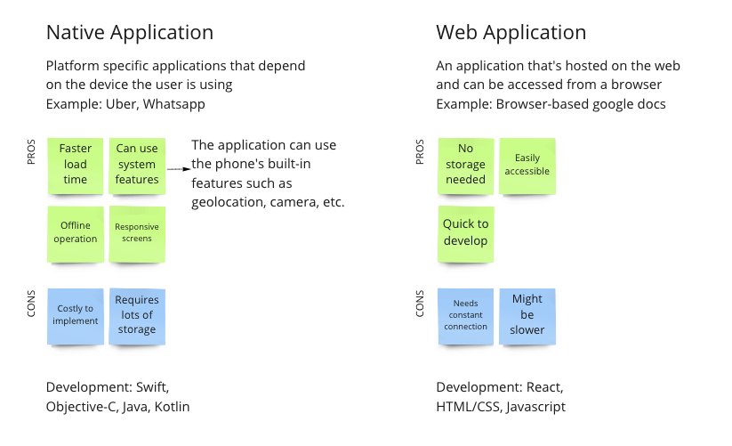
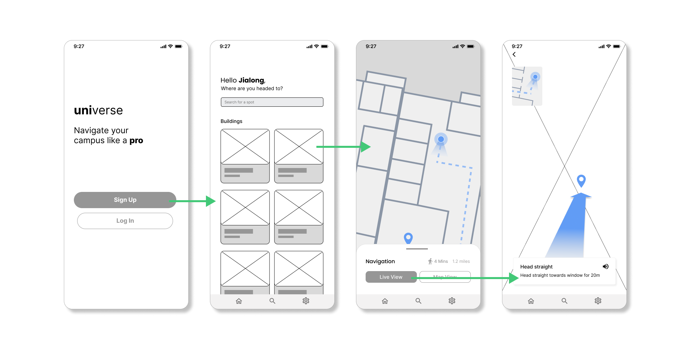
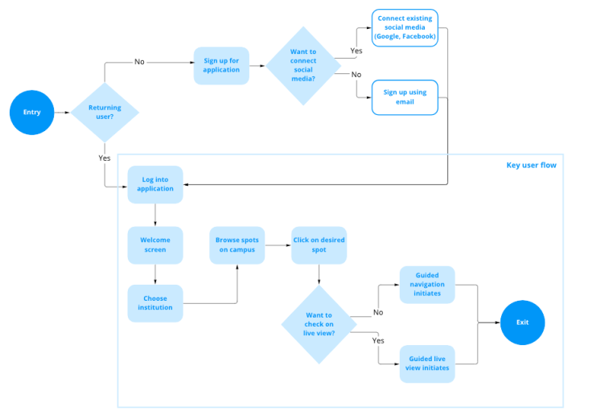
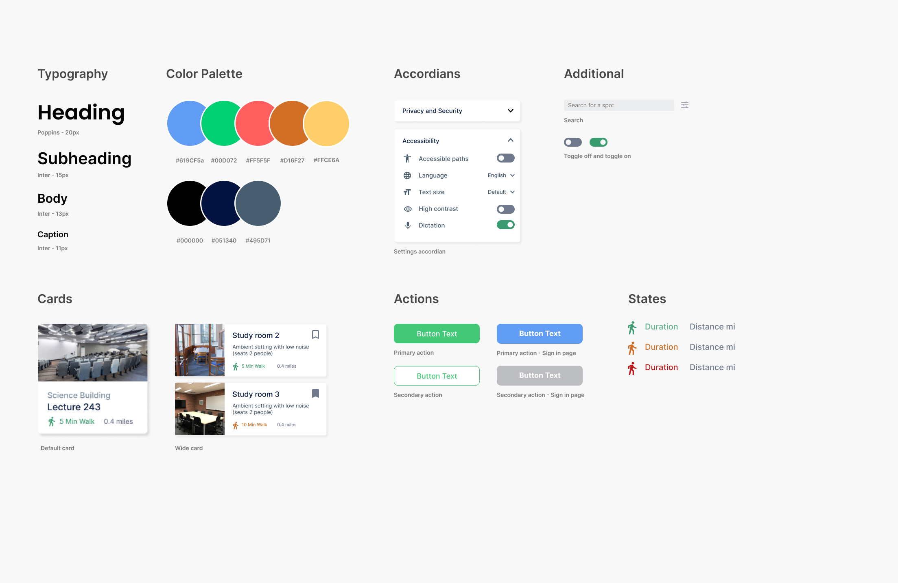
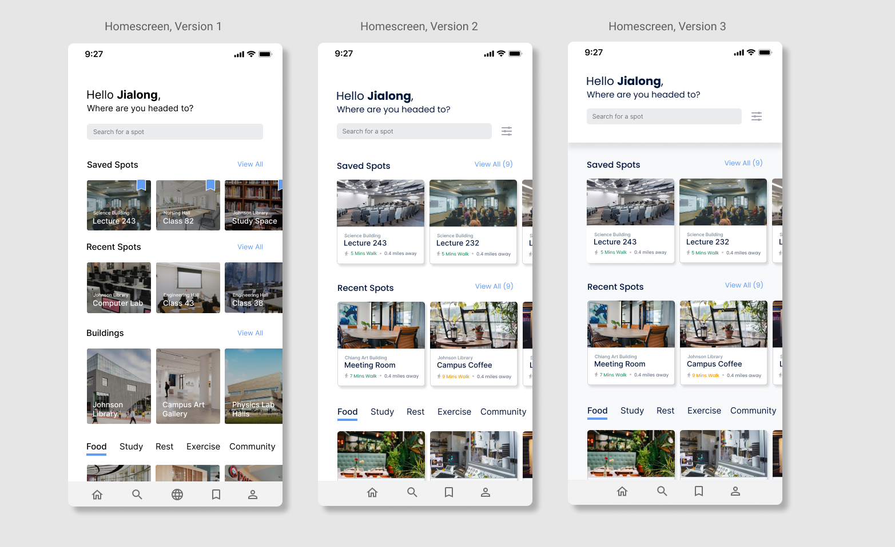
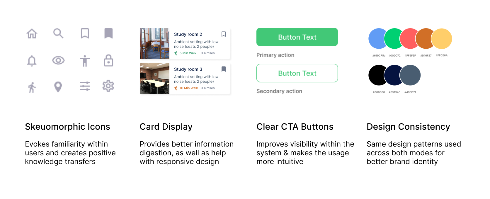

UNIVERSE
Role: UX UI Designer, Researcher
Duration: 2 Weeks
Software: Figma
Universe is an app which is designed to help students navigate their campus with confidence. It contains a built-in navigation feature, allowing campus go-ers to search for specific buildings and even classrooms.
In addition to this, the navigation includes the option to use augmented reality technology. When using this feature the user is provided with an interactive navigation experience. The user can use their own phone camera through the app, allowing them to navigate the campus using overlaying on-screen prompts.
DISCOVER
Design Process
Before jumping into my project, I decided to lay out a clear design process in order for me to organize my thoughts and maximize design outcomes.
1. Discover
Discover and identified the issue, so a foundation could be built to solve the problem.
2. Research
Conducted interviews as a research method to understand the users needs and pain points.
3. Ideate
Brainstormed multiple ideas and design solutions through discussion and sketches.
4. Prototype
Created a working prototype which demonstrated my user focused design solutions.
Problem Description
Navigating university campus buildings can be confusing and difficult, especially for first time students who are transitioning from high school or even community college. I noticed that maps of campuses lack clear directions, are oftentimes overwhelming to the eye to look at, and are even difficult to read.
Who am I building for?
This application is useful for not only the university’s students but also for campus visitors such as parents, prospective students, and guest lecturers. I believe this application would be beneficial for anybody who is trying to get around campus and has the longevity to be used year round by a variety of users.
RESEARCH
Primary Research
Before starting on my designs, I conducted primary research to further my understanding of the problem. I collected my primary research using 3 methods
Focus Groups
Interviewing small groups of potential users for initial thoughts
Ethnographic Studies
Observing potential users around campus buildings and related establishments
User Interviews
In-depth user interviews with students, professors, and campus visitors
Primary Research Insights
Before starting on my designs, I conducted primary research to further my understanding of the problem. I collected my primary research using 3 methods
From my primary research I concluded 3 key insights which I used to guide my design process:
- 94% of students had difficulties finding their classes within the first few months of stepping foot on campus
- 98% of students prefer to use a digital application for navigation rather than a traditional map
- 58% of first generation students didn’t feel too confident in navigating their campus without help
Some use cases that I derived for this application were:
- Being a new student and trying to find your classrooms for the first time
- Meeting up with a friend at a new place on campus
- Trying out a new lunch spot on campus
- Prospective student wanting to check out the campus before applying
Secondary Research Insights
I conducted secondary research by reading through research articles and published reports, from that, my main takeaways were:
There’s a lack of support for people with disabilities
Students, faculty, and visitors who have a mobile disability find it difficult to efficiently navigate across campus
A majority of people are visual learners and appreciate guidance
People prefer to learn with visual and hands-on guidance. A static floor plan provides a visual however there’s no further guidance
Current Workarounds
Though applications such as Google maps provide great help for outdoor navigation (between building to building), there is virtually no support for indoor navigation (within buildings). This presents an opportunity for me to step in and bridge this gap.
Floorplans
A current workaround that students have for finding their way around a building is to look at existing floor plans. Because applications such as Google Maps typically don’t support indoor navigation, students tend to look up floor plans online and map our their journey beforehand.
This workaround can be an issue because floor plans can be hard to find and aren’t typically published online. Even in the image example above, I struggled to find a floor plan of the Conley Art Building 2nd floor, I had to compromise and use an unofficial lighting fixture upgrade plan.
Asking Around
Another workaround that students have for indoor navigation is simply asking around. However, if the student is asking online, timing could be an issue if they’re just sitting there waiting for someone to respond. If the student is asking for help in person, there is also a chance that the other person may not know where their destination is either.
IDEATE
How might we enable campus go-ers to feel more confident in their navigation journey and efficiently find the location they’re looking for?
Accessibility
Inclusivity for individuals with visual, auditory, or mobile impairments
Ease of use
Intuitive and simplistic design for people who are on the go
Dynamic
Real time events on campus (construction, blockages) are updated
Design Audit - Google Maps
Before ideating, I conducted a design audit of some of the key navigation apps campus go-ers tend to use. Google Maps contains good contrast of its elements which helps with accessibility. The app also has different language options which helps with user flexibility. It also has a live view AR option, where users can hold up their phone camera and an overlay will appear that guides them in the direction that they’re planning to go.
However, one of the downfalls of Google Maps is that it does not have accessible path options for wheelchair users. Meaning that users cannot customize their path to avoid staircases, heavy terrain, obstacles, etc. In addition to this, there’s also no in-building navigation for campus buildings.

Design Audit - Apple Maps
With Apple Maps, the information is clearly presented for the user. Using the app itself is very self explanatory. Like Google Maps, Apple Maps also contains written instructions in addition to a map view.
Something that Apple Maps also suffers from is the lack of accessible path options for wheelchair users, and there’s no in-building navigation for smaller places such as a campus building.

Development Options
After looking at my options, I decided to go with a Native application. A native application uses the code libraries of whichever type of mobile device it’s operating on, and doing this would let me use specific technologies from the phone such as GPS tracking, camera access, and push notifications.
Then I looked at some of the programming languages needed to build this app which includes Swift for IOS and Java for android.
Low Fidelity Wireframes
After thinking about the technical requirements needed for my app, I then got started on producing low fidelity wireframes. This is the low fidelity wireframe of a flow that I conducted my usability test on.
The user flow is: Sign into the application > Browse for a location they would like to go > Choose between regular view or live view guidance > Exiting the application
I also developed a user flow visual:
Usability Study
I conducted a usability study to determine the areas needed for improvement in my selected user flow above. The usability study was conducted both remote and in-person and was unmoderated.
Participant demographics:
30 participants total
Students (18-30 year old)
Faculty (26-60 year old)
Visitors (15-57 year old)
Studying findings:
Timing to location
Users expressed interest in having a real-time feature that lets them know how far away a location is. This provides a quick distance estimate and ETA for better transparency.
Data: 82% of participants wished to have this feature
Saving locations
Users wanted to have the ability to save certain spots to be accessed for later, instead of manually typing and trying to find them again. Returning users are now able to have their personal database of spots.
Data: 94% of participants wished to have this feature
Audio Instructions
During live view, users wished to have an option that narrates the instructions to them, instead of having to read. This provides an accessible solution for users who wish to listen to audio instead of reading text
Data: 33% of participants wished to have this feature
DESIGN
Design Language
After refining the application based on the usability study feedback, I created a style guide which aims to standardize my designs and provide consistency throughout the application.
Doing this would allow me to create cleaner designs that add to the overall user experience.
Home Screen Iterations
I designed several homescreen options and determined which iteration drives the best outcomes.
Home screen version 1 relies too heavily on images compared to the other designs. Having just an image with a class number felt too vague. This version was also not informative enough; It lacks details such as distance and walk time. Such details give the user more information so they can make decisions quicker.
Home screen version 2 is the selected version.
Home screen version 3 was not selected because the shadow from the header breaks the sense of vertical motion when the eye looks at the app from top to bottom.
Design Rationale

UX Design Principles Evaluation
In order to evaluate my designs, I looked at known UX design principles to make sure that my designs adhere to these standards
Accessibility
I provided accessible options for users who have impairments or alternative needs through audio guide, dictation, text sizing options, contrast options, and language settings.
Learnability
I improved the user’s ability to learn the system by following industry standards, providing intuitive designs, and following common design patterns.
Discoverability
I reduced the cognitive load by displaying only essential actions, prioritizing key content, and grouping similar elements.
Clean Design
I ensured the designs are clean and simplistic to prevent clutter through using negative space and clean colors.
Final Solution

Next Steps
I am currently working alongside developers and project managers to create this project into a live application! Once in production, I will be looking into user feedback, growth rates, retention rates, user error rates, net promoter scores
Learnings and Takeaways
Accessibility typically is not the main concern when it comes to popular navigation apps, so I really seeked to address this problem in my solution. I’m super excited to see this project get brought to life soon!